PRM323 · LAB 2 · THIẾT KẾ UI/UX CÓ AI HỖ TRỢ
Giúp giảng viên FPTU không bao giờ quên điểm danh và biết sớm sinh viên nào cần được quan tâm, trên một app điện thoại thay cho việc mở FAP.
Group 3 · Trần Ngọc Thiên SE190533 · Vũ Anh Khôi SE194606 · Vũ Huy Phương SE190742 · Lê Thành Lộc SE182702
Figma: figma.com/design/1qIZVpL0Q7bD9UzT5TVBRy · GitHub: github.com/thiengthb/prm323-lab2-se190533
1 · NGHIÊN CỨU
Giảng viên sợ điều gì nhất khi điểm danh? Sinh viên có tự theo dõi số buổi vắng không?
Góp ý trực tiếp của giảng viên hướng dẫn, buổi review 16/10
2 cuộc phỏng vấn sinh viên thật (SV-01, SV-02)
Quy chế FPTU: vắng quá 20% không được thi
Không dùng AI giả lập người dùng (bài học từ v1)
Quên điểm danh là bị trừ lương, và giảng viên quên thật: 2 sinh viên kể 2 lần ở 2 lớp, giảng viên chỉ biết sau 1–2 ngày.
Đếm sĩ số là thừa: giảng viên lâu năm nhớ khoảng 35 gương mặt qua 10 tuần.
Sinh viên hiếm khi xem số buổi vắng (“lâu rồi không xem”) và không nhớ chắc mình được vắng mấy buổi.
Bằng chứng: research/02-evidence-matrix.md (E-01..E-27)
2
2 · PERSONA
Dạy 3–4 slot mỗi ngày, lớp khoảng 35 em
“Nhớ mặt cả lớp, chỉ sợ quên bấm.”
Đau: quên là trừ lương; phải mở FAP riêng; báo cáo chỉ có số.
≤ 20 giây
TC-1 · từ lúc mở app tới chốt một slot
Thỉnh giảng, vài slot rải rác mỗi tuần
“Hôm nay có dạy không nhỉ?”
Đau: không có thói quen nên quên; biết mình quên khi đã muộn.
≤ 3 chạm
TC-4 · từ lời nhắc tới chốt xong
Sinh viên, chỉ dùng trình duyệt điện thoại
“Lâu rồi không xem.”
Đau: không biết còn được vắng mấy buổi; không gì nhắc trước.
0 chạm thêm
TC-5 · đọc số buổi còn được vắng sau khi quét
ux/persona.md v0.2 · tên là tên giả · ngưỡng TC là giả định, chưa đo với người thật
3
3 · GIẢI PHÁP CHO TỪNG PERSONA
| Persona | Nhu cầu | Tính năng | Đo bằng |
|---|---|---|---|
| P-01 | Chốt nhanh, không đếm | Lớp tự quét QR, bộ đếm tự chạy; thầy chỉ xử lý người chưa quét rồi bấm Chốt, có Hoàn tác | TC-1 |
| P-01 | Biết em nào cần giúp | Nhóm Vắng nhiều ở Tổng quan, xếp theo số buổi vắng; mở hồ sơ để Nhắc nhở | TC-3 |
| P-02 | Không quên chốt | Dải quên chốt đầu Tổng quan và nhắc trên màn khoá, mở thẳng phiên điểm danh | TC-2, TC-4 |
| P-03 | Biết còn được vắng mấy buổi | Màn quét xong báo luôn số buổi còn được vắng; báo sai ngay trên web | TC-5 |
Bước đếm sĩ số và kiểm tra ngẫu nhiên của v1 (E-04); xuất báo cáo % chuyên cần (E-05); tự tạo lớp và lịch, vì lớp nhập từ dữ liệu FAP (E-12)
ux/persona.md mục Persona → Nhu cầu → Ý tưởng → Kiểm chứng
4
4 · CẤU TRÚC VÀ MÀN HÌNH
| Tab | Màn con |
|---|---|
| Tổng quan GV-001 | Phiên điểm danh GV-102 · Vắng nhiều GV-104 · Hồ sơ SV GV-201 · Yêu cầu sửa GV-105 |
| Điểm danh GV-002 | Lịch tuần, chạm slot mở GV-102 |
| Lớp GV-003 | Chi tiết lớp GV-103 · Nhập lớp GV-100 |
| Tài khoản GV-004 | Chọn màu · Đăng xuất |
| Vào app | Đăng nhập, Đăng ký, Xác nhận email, Bắt đầu, Quên mật khẩu (GV-090..094) |
Đăng nhập, Đăng ký · Buổi vắng của tôi SV-001 · Chi tiết môn SV-002 · Quét mã SV-101 · Gửi báo sai SV-102
Mở bằng link trên máy chiếu, hiện mã QR và mã 6 số
.D có dữ liệu · .E trống · .L đang tải · .X lỗi · .S xong
Ví dụ GV-102 .D2 = phiên đã đóng mã, chờ chốt
ux/user-flow.md mục 2 · design/final-ui-v2.md mục 4 · Figma 01 User Flow · v2
5
5 · BA FLOW CHÍNH
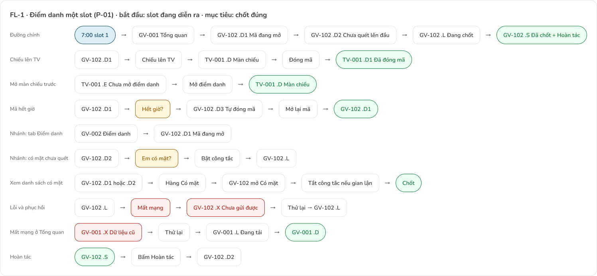
Tổng quan → mở mã → Đóng mã → Chốt → Đã chốt, có Hoàn tác · lỗi: mất mạng khi chốt → dải vàng, Thử lại
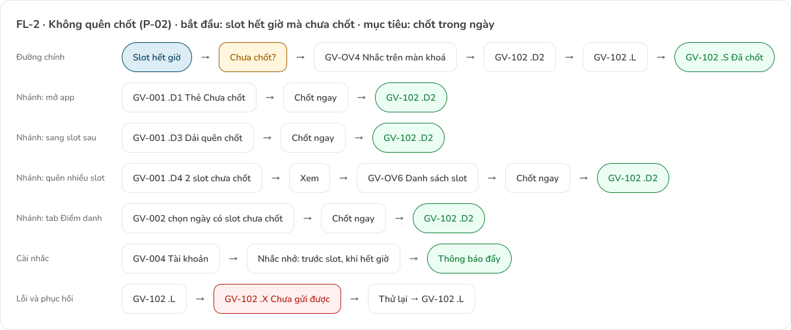
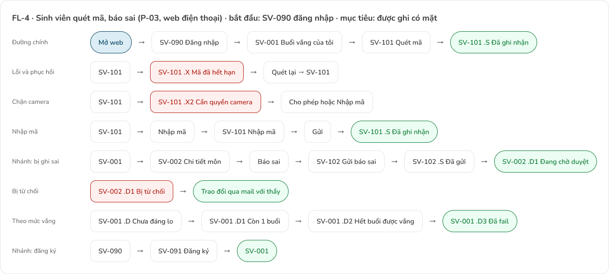
Figma 01 User Flow · v2 (8 flow: FL-0, 0b, 1, 2, 3, 4, 4b, 5) · ux/user-flow.md mục 4–5
6
6 · STYLE GUIDE · VIẾT TRƯỚC KHI GỌI AI
Không câu giải thích tính năng
Tiêu đề và nút ≤ 3 từ, nút bắt đầu bằng động từ
Trạng thái = icon + màu + 1–2 từ
Số là chữ chính: “3/4” to hơn nhãn
Tối đa khoảng 25 từ mỗi màn
primary #0B4F71
Biển sâu, chữ trắng 8,86:1
success #15803D
Có mặt, đã chốt
warning #A15C00
Chưa chốt, vắng 3/4–4/4
danger #B42318
Lỗi, vắng từ 5/4
Nunito, 9 kiểu chữ từ 28 xuống 12; nội dung ≥ 14
Lưới 4: 4 · 8 · 12 · 16 · 24 · 32
Bo góc 8; viền 2; thẻ bấm được có gờ đáy 2, thẻ chỉ xem thì chìm
Nút chính cao 48; vùng chạm ≥ 48
Biến Figma: Color (8 mẫu màu), type/*, space/*, radius/*
design/DESIGN.md · design/final-ui-v2.md mục 2–3 · Figma 04 Design System
7
7 · AI SINH GIAO DIỆN ĐẦU TIÊN
Đủ 5 phần: người dùng, việc cần làm (4 màn), nền tảng 360 × 800 dp, ràng buộc, phong cách. Prompt nguyên văn: ai/prompts/AI-03-stitch-IT-0.md
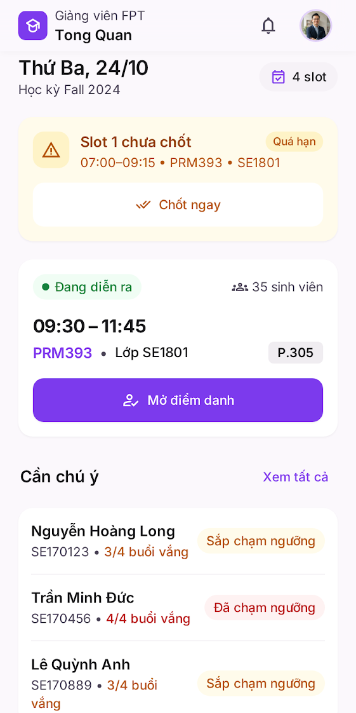
IT-0 · Tổng quan
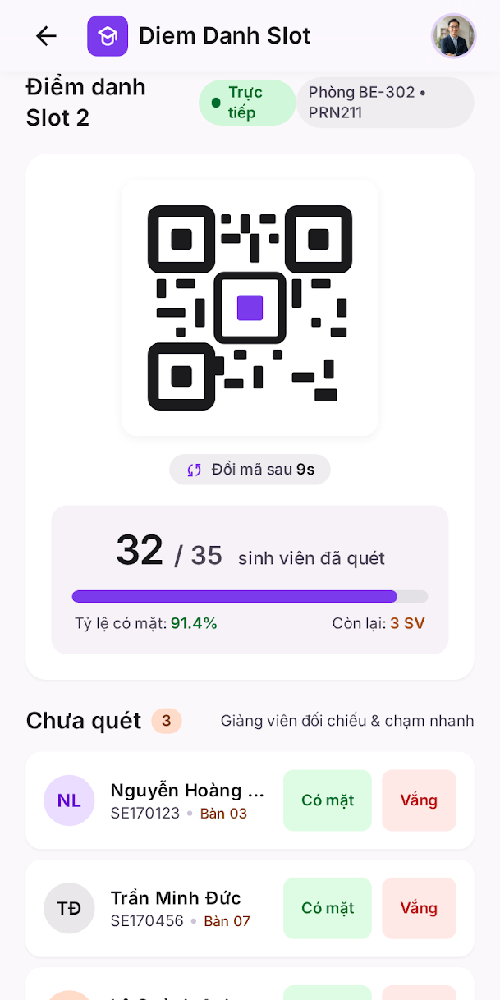
IT-0 · Phiên điểm danh
ai/ai-design-log.md AI-03 · assets/stitch/IT-0/
8
8 · PHẢN BIỆN VÀ BA VÒNG SỬA
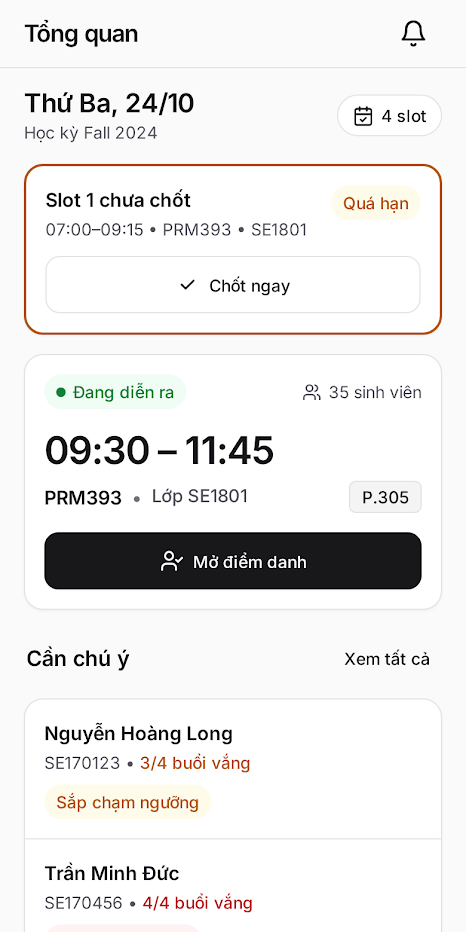
Hết tím, hết chữ dưới 14, hết đoạn hướng dẫn
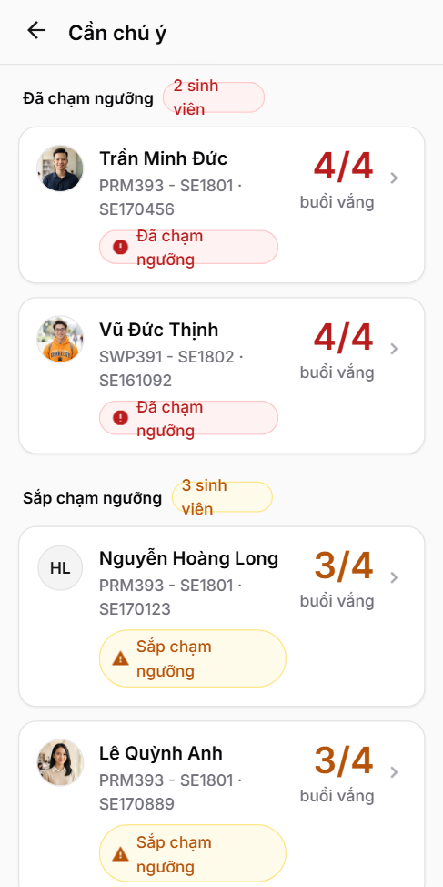
Slot chưa mở, đang mở, đã chốt; màn Vắng nhiều
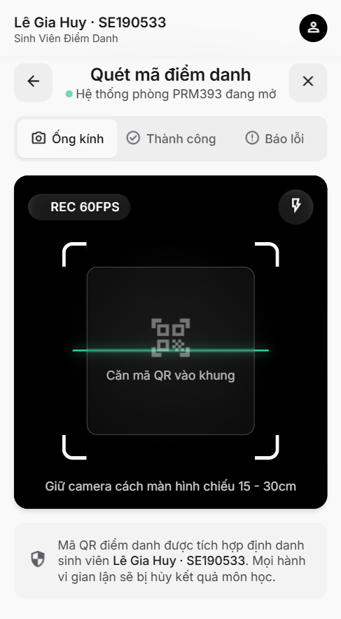
Mất mạng, chưa có slot, quét mã trên web
F2 GV-001: chip “Chưa bắt đầu” đè chip phòng
F5 GV-102: chữ 11–12 px ở 18 chỗ
F9 Cần chú ý: nút “Xuất báo cáo”, băng giải thích luật 20%
F12 GV-201: nút “Nhắc sinh viên” mất chữ
F16 SV-101: trạng thái thành tab bấm được
Theo Nielsen, accessibility, persona
ai/critique/AI-04, AI-09, AI-10 · assets/stitch/IT-1..IT-3
9
9 · QUYẾT ĐỊNH
| Quyết định | Gợi ý của AI | Nhóm làm gì, vì sao |
|---|---|---|
| Accept | Ảnh đại diện trên mọi hàng sinh viên (Stitch IT-0) | Giữ: thầy nhận mặt nhanh hơn đọc MSSV (E-04) · D-06 |
| Accept | Thẻ “Chốt ngay” đầu Tổng quan khi còn slot chưa chốt | Giữ, thành dải quên chốt: đúng nỗi sợ bị trừ lương (E-01, E-09) · D-03 |
| Modify | Bảng màu Material 3 tím, 5 họ màu | Đổi về một màu chính, ba màu trạng thái (F3) · D-01, D-11, D-13 |
| Modify | Hộp xác nhận trước khi chốt (Claude đề xuất) | Bỏ hộp ở bản cuối, giữ Hoàn tác: chốt một chạm, sai thì hoàn tác (H3, H9) · D-04 |
| Reject | Nút “Xuất báo cáo”, băng giải thích luật 20% | Thay bằng Nhắc nhở: thầy muốn chăm sóc sinh viên, không chỉ xem số (E-05, F9) · D-05 |
| Reject | Thanh tiến độ và % lặp lại bộ đếm 32/35 | Bỏ: không lặp một thông tin hai chỗ (F6) · D-12 |
design/design-decisions.md (D-01..D-23) · ai/ai-design-log.md
10
10 · WIREFRAME → TRẠNG THÁI → FINAL UI
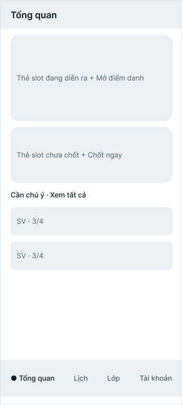
Wireframe GV-001
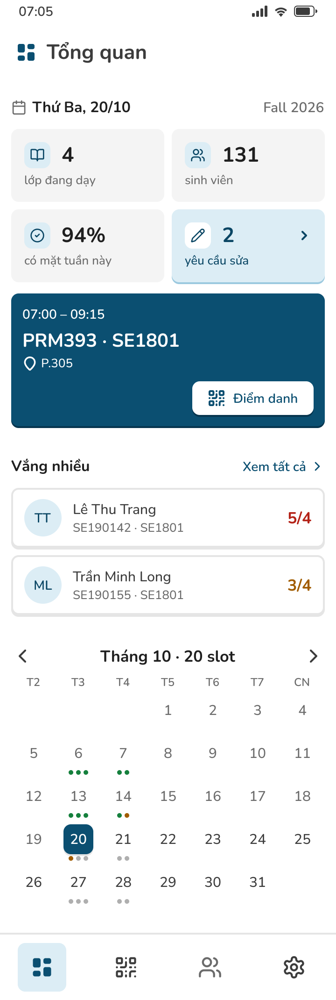
Final GV-001 .D
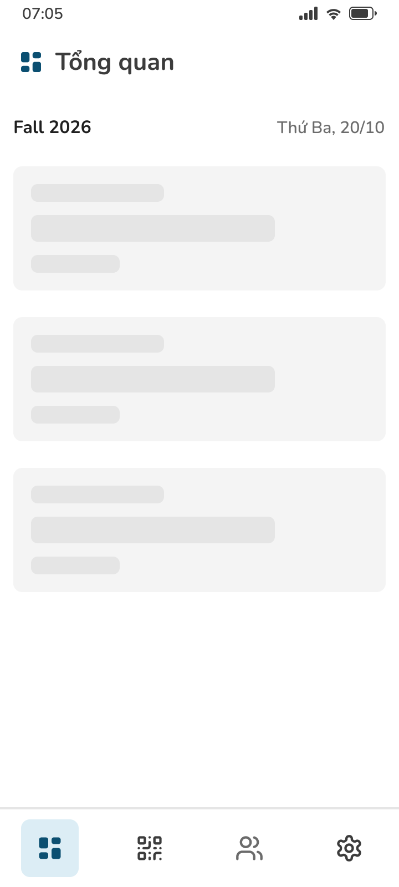
GV-001 .L đang tải
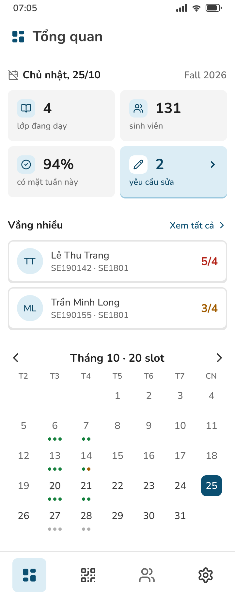
GV-001 .E hôm nay không dạy
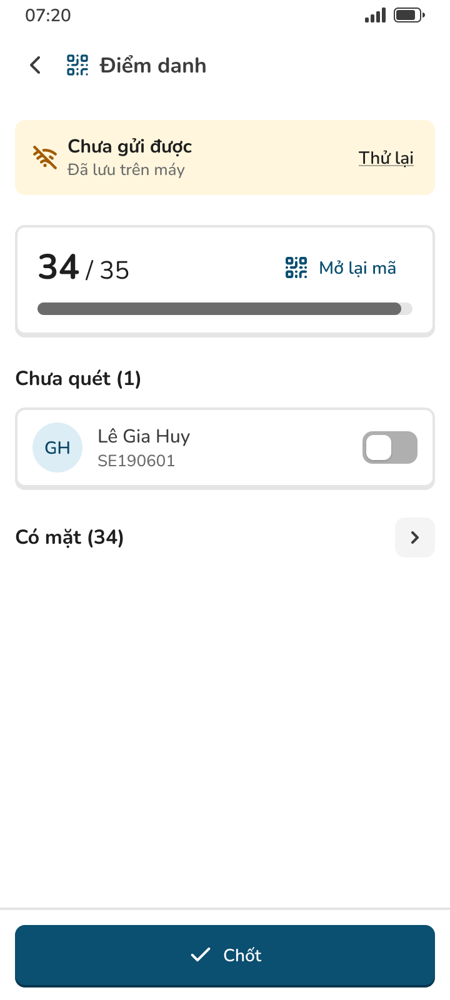
GV-102 .X mất mạng
Figma 02 Wireframe · 03 Final UI · v2 · trạng thái trống, tải, lỗi dùng chung một kiểu
11
11 · FINAL UI
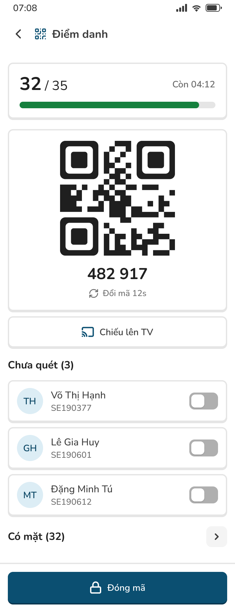
GV-102 .D1 mã đang mở
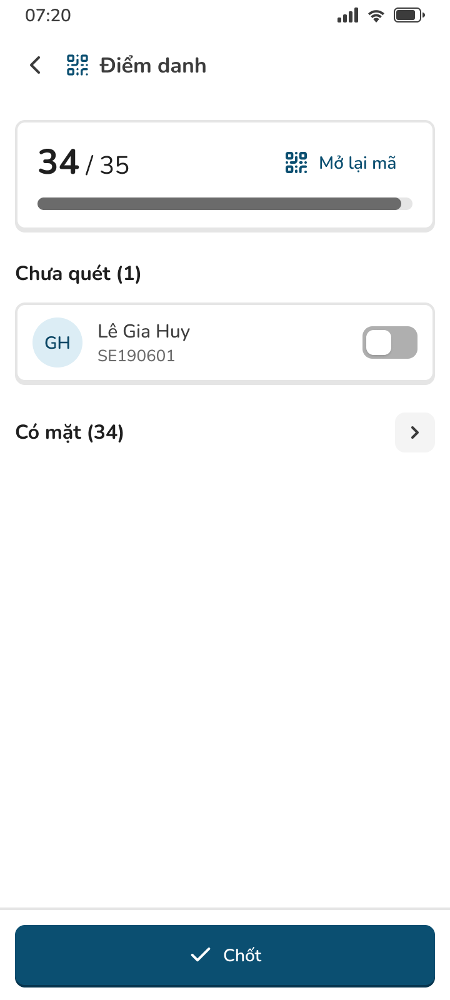
GV-102 .D2 đóng mã, chờ chốt
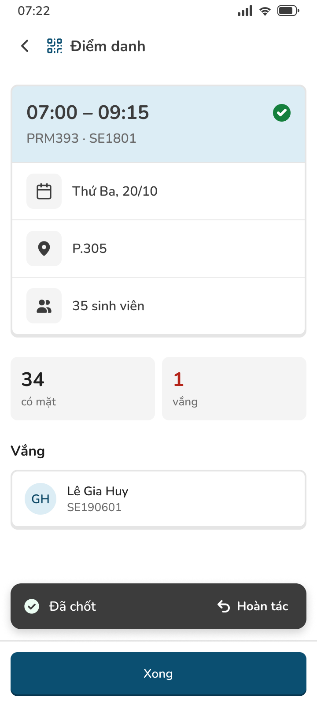
GV-102 .S đã chốt
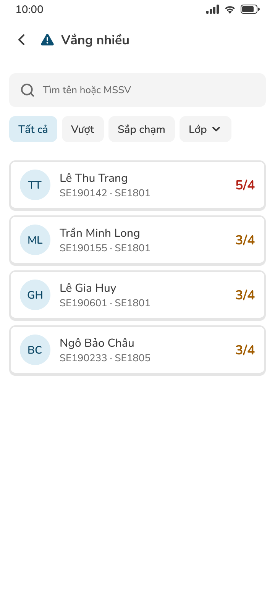
GV-104 Vắng nhiều
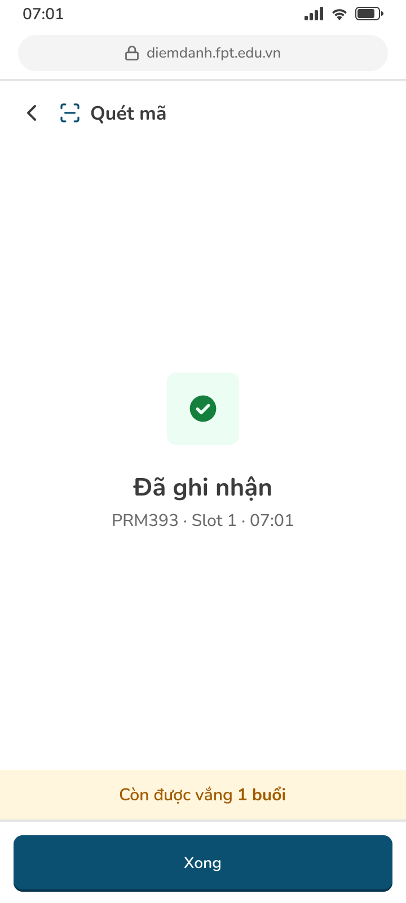
SV-101 .S quét xong
Figma 03 Final UI · v2: 22 màn khác nhau, mỗi màn đủ trạng thái .D .E .L .X .S
12
12 · ACCESSIBILITY VÀ PROTOTYPE
| Tiêu chí | Ngưỡng | Kết quả |
|---|---|---|
| Chữ trắng trên primary | ≥ 4,5:1 | 8,86:1 |
| Chữ trạng thái trên nền nhạt | ≥ 4,5:1 | 4,76 đến 5,92 |
| Cỡ chữ nội dung | ≥ 14 | nhỏ nhất 14 |
| Vùng chạm | ≥ 48 × 48 dp | nút 48, tab 72 |
| Không chỉ dùng màu | icon + chữ | dải vàng luôn có chữ |
| Bề rộng 360 và 412 dp | không vỡ | khung clone 412 |
FL-1 điểm danh một slot, có Hoàn tác
FL-2 dải quên chốt mở thẳng phiên
FL-4 sinh viên quét mã, nhánh mã hết hạn
Có Back đúng, sheet dạng lớp phủ, đang tải → kết quả, không ngõ cụt
design/design-decisions.md mục 2 · design/final-ui-v2.md mục 2 · Figma 06 Prototype · v2
13
13 · BÀN GIAO VÀ BÀI HỌC
Token → ThemeData, component → widget: hai bảng ánh xạ
Mỗi màn 6 mục: bố cục, component, trạng thái, tương tác, điều hướng, ràng buộc
handoff/flutter-handoff.md · Lab 3 dựng lại bằng Flutter
Phía giảng viên chỉ có góp ý của thầy; mới 2 phỏng vấn sinh viên
Ngưỡng TC chưa đo với giảng viên thật trên prototype
UI Simplicity 18/20 do Claude chấm, chưa có người chấm lại
Hỏi người thật, không để AI đóng vai người dùng
Style guide trước, AI sau
Bớt chữ trên màn; kể theo thứ tự tư duy
github.com/thiengthb/prm323-lab2-se190533 · Figma 1qIZVpL0Q7bD9UzT5TVBRy
14